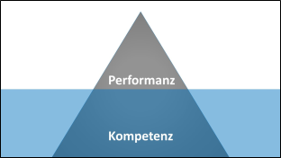

Alle reden von Kompetenzen!
Wohl kaum ein Wort ist so präsent in der bildungspolitischen Diskussion wie "Kompetenz". Schlagworte wie zum Beispiel"Kompetenzentwicklung", "Kompetenzmessung", "kompetenzorienrterter Unterricht" und "kompetenzorientertes Prüfen"begegnen uns immer wieder. Dabei ist durchaus nicht immer klar, was genau mit "Kompetenz" gemeint ist. Eine der meistzitierten Definitionen stammt von Weinert (2001). Danach sind Kompetenzen:
"erlernbare kognitive Fähigkeiten und Fertigkeiten, um bestimmte Probleme zu lösen, sowie die damit verbundenen motivationalen, volitionalen und sozialen Bereitschaften und Fähigkeiten, um die Problemlösungen in variablen Situationen erfolgreich und verantwortungsvoll nutzen zu können."
Sie sehen:
- Kompetenz ist erlernbar.
- Kompetenz ist bezogen auf Situationen und Domänen.
- Kompetenzen lassen sich nicht direkt beobachten oder messen. Sie zeigen sich in beobachtbarem Verhalten, der Performanz. Das Verhältnis der Performanz zur Kompetenz könnten wir bildlich durch das Eisbergmodell beschreiben.

Im Unterschied zur Kompetenz bezieht sich "Qualifikation" nicht auf persönliche Fähigkeiten, sondern auf eine konkrete, personenunabhängige Befähigung, eine Tätigkeit konstant auf einem bestimmten Niveau ausführen zu können.